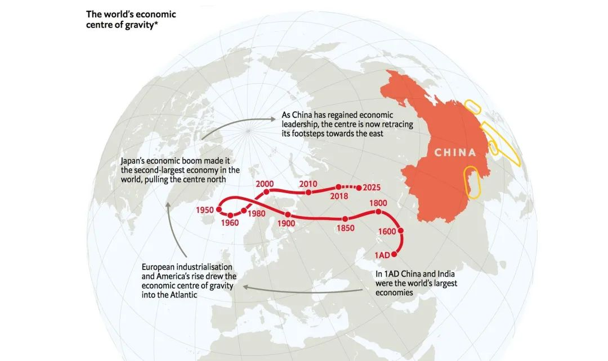
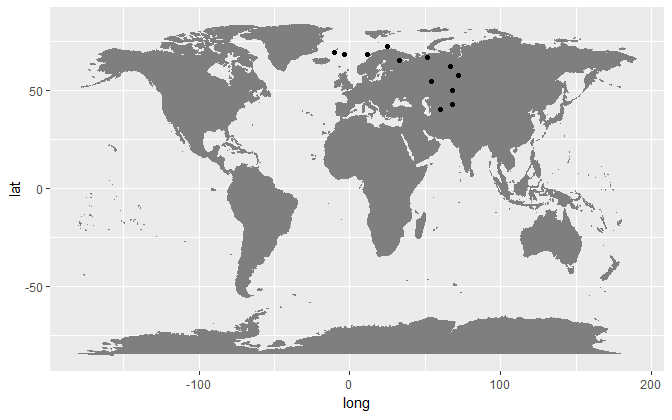
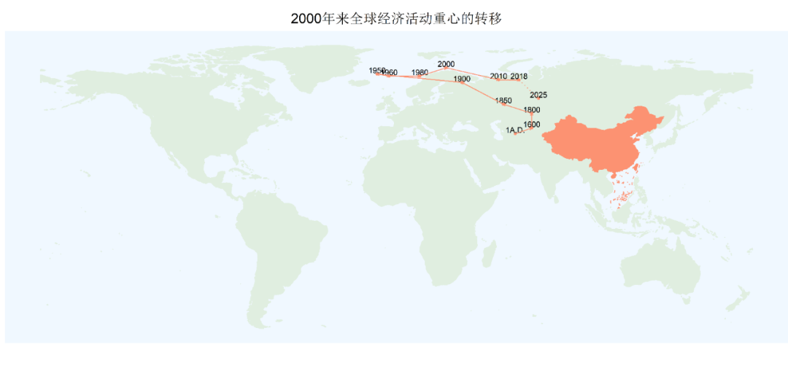
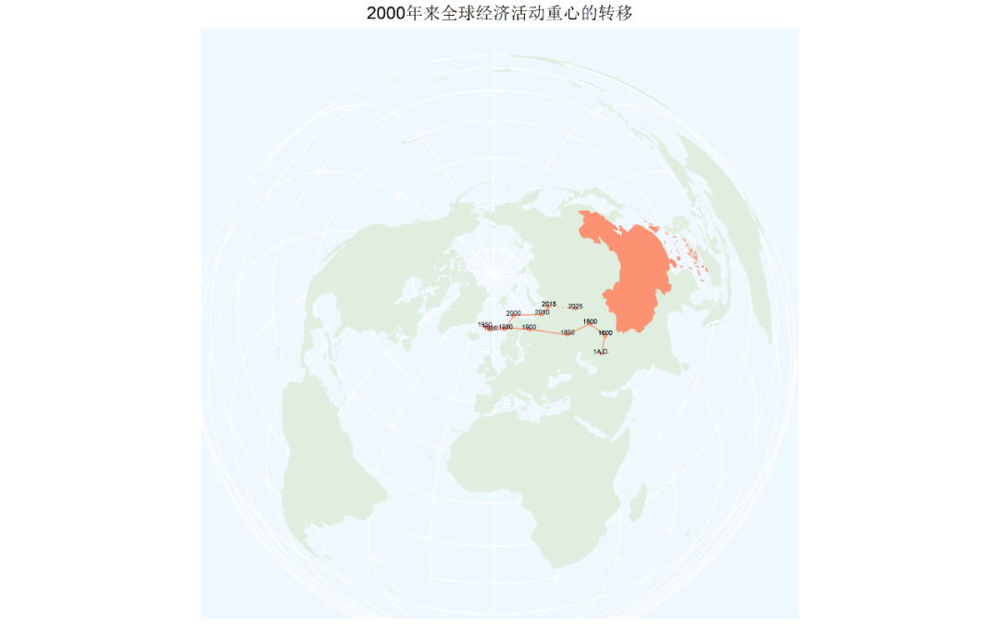

实用技术|如何用R基本复现《经济学人》杂志中的地图插图
收录于合集
#地图绘制 6 个
#数据可视化 15 个
#实用技术 19 个
2020年初，突如其来的新型冠状病毒（COVID-2019）席卷全世界。这场全球大流行病不仅给世界各国人民的生命健康带来了严重威胁，也给全球经济运行带来了严重冲击。中国自然也不能置身事外，其GDP在一季度更是同比下降了6.8%。但由于中国及时采取了十分严格的疫情防控措施，不但及时遏制住了疫情的进一步蔓延，而且也为经济的迅速重启创造了条件。不仅如此，重启后的中国经济取得了亮眼的进步，从第二季度开始连续增长，最终全年GDP比上一年增长2.3%，成为当年经济唯一实现增长的主要经济体。
事实上，早在2018年10月27日，英国著名杂志《经济学人》（The Economist）在其网站就曾刊载出一篇题为《一个新兴的霸权：中国世纪正在来临》（A New Hegemon: The Chinese century is well under way）的文章，文章征引了包括著名英国经济史学家安格斯·麦迪逊（Angus Maddison）的估算以及世界银行发布的数据库在内的多家数据，生动形象地展现了全球经济重心从公元元年到2018年的转移过程，并给出从2018年向2025年的预测。文章指出：全球经济重心在历经2000年的变迁后将重新向中国迈进，如图1所示：

图1 错误示例
持允而论，图1中的这张地图虽然直观形象，但是细究会发现该图存在多处错误，特别是黄框处存在对中国地图边界错绘（沿非法的“麦克马洪线”错绘中国西藏与印度东北部的边界）、漏绘（海南岛、台湾岛、南海诸岛以及钓鱼岛及其附属岛屿）的情况。如果我们国内的读者想借用该图进行展示或者想在自己写作过程中引用，势必要加以修改。在不用PS技术处理图像的情况下，如果我们自己想要重制这张图，那么利用手上的资料该如何做呢？本期实用技术就与大家分享如何大致复现这一地图插图。具体而言，这一地图绘制的复现过程会牵涉到两个方面的小问题，分别是如何将地图上的点连接起来以及如何进行投影变换以避免将包含原始经纬度的点投影在经过投影变换后的地图上进而出现错位的问题。
《经济学人》网站在文末提供了这篇文章所需要的原始数据和复现的步骤，对此有需要的读者可以自行前往GitHub页面（地址：https://github.com/TheEconomist/graphic- detail-data/tree/master/data/2018-10-27_chinese-century）进行下载，其主页给出的最终效果如图2所示：
 图2
可以看出图2给出的样图只是将带有地理信息坐标的点投射到默认投影的图中，并没有将各个点连接起来。关于如何实现将带有经纬度的点投射到地图上我们在上一期推送《实用技术 | 如何用R绘制中国历史地图》中已经提到过，它就是利用geom_point()加以实现。那么我们接下来看如何将地图上的点连接起来。
在下载数据库后，我们对经济中心的数据进行了整理，提取了经纬度并且进行了重新归类。之所以要这样做是为了使用geom_path()对投影到地图上的点与点进行连线。再次，细心的读者会发现因为从2018到2025之间的经济转向是估算，因此原图（图1）中从2018到2025间的点的连线为虚线，因此，我们将原数据库拆成分别是公元元年到2018年的eco_centre以及2018年到2025年的eco_centrea这2个数据库分别绘制。由于本文需要的数据比较少，我们可以采取直接对csv表进行修改的方法，但如果数据量比较大则需要借助函数进行实现。
我们打开R，这里需要加载的依然是tidyverse和sf两个包，我们先复现平面投影，这也是GitHub上代码最终给我们呈现的效果图（图2），代码如下：
library(tidyverse)
library(sf)
World <- st_read("world.json")
China <- st_read("Chinaditu.json")
eco_centre <- read_csv("eco.centre.csv", col_types = cols(lat = col_number(), long = col_number(), year = col_character(),group=col_number()))
eco_centrea <- read_csv("eco.centrea.csv", col_types = cols(lat = col_number(), long = col_number(), year = col_character(),group=col_number()))
ggplot()+
geom_sf(data = World, colour="honeydew2", fill="honeydew2")+
geom_sf(data = China,colour = "#fc9272", fill = "#fc9272")+
geom_point(data = eco_centre,aes(x=long,y=lat),colour = "#fc9272", size=1)+
geom_text(data = eco_centre,aes(x=long,y=lat,label=year),size =3,vjust = 0, nudge_y = 0.5)+
geom_path(data = eco_centre,aes(x=long,y=lat,group=group),colour = "#fc9272",arrow = arrow(length = unit(0.1, "cm")))+
geom_point(data = eco_centrea,aes(x=long,y=lat),colour = "#fc9272", size=1)+
geom_text(data = eco_centrea,aes(x=long,y=lat,label=year),size =3,vjust = 0, nudge_y = 0.5)+
geom_path(data = eco_centrea,aes(x=long,y=lat,group=group),colour = "#fc9272",linetype = "dotted",arrow = arrow(length = unit(0.1, "cm")))+
ggtitle("2000年来全球经济活动重心的转移")+
theme(panel.grid = element_blank(),
panel.background = element_rect(fill = "Aliceblue"),
axis.text = element_blank(),
axis.ticks = element_blank(),
axis.title = element_blank(),
plot.title = element_text(size = 15, hjust = 0.5))
最后，我们按下列代码保存，得到图3：
ggsave("2000年来全球经济活动重心的转移（平面）.png",dpi=600,width=12,height=7.5)
 图3
这样，我们的第一个目的——将投影在地图上的各个点连接起来便达到了，但是这张图看起来十分扁平，而且缺乏立体感，那么我们如何得到类似《经济学人》杂志中呈现的立体地图效果呢？这就牵涉到这篇帖子要回答的第二个问题——如何对地图进行投影变换，与此同时还要保证将原来包含经纬度信息的点重新投影到经过投影变换的地图上避免出现点错位或者溢出的问题。
我们首先对世界地图进行投影变换，这样可以实现大致和《经济学人》杂志呈现出的世界地图相类似的地图（原代码并未告诉我们具体投影变换的坐标系，只给出图2那样的初步结果）：
World2 <- sf::st_transform(World,"+proj=laea +y_0=0 +lon_0=0 +lat_0=60 +ellps=WGS84 +no_defs")
因为地球本身是个椭球体，地球上同一个地点的经纬度在不同的地理坐标系下可能并不一样，如果我们仍然按照原来的地图进行投影，则可能会出现点在地图上溢出或者错位的情况。因此，在地图已经经过投影变换的情况下，我们如果要继续使用geom_point()、geom_text()以及geom_path()等图层函数时，对包含经纬度信息的点也要进行同样的投影变换，代码如下：
eco_centre2 <- st_as_sf(eco_centre, coords = c("long", "lat"), crs = 4326)
eco_centrea2 <- st_as_sf(eco_centrea, coords = c("long", "lat"), crs = 4326)
这里4326是EPSG Geodetic Parameter Dataset（大地测量参数数据集）里的代码（其中每一个代码都对应一个投影），和World Geodetic System（世界大地测量系统, WGS）内的WGS 1984（或称WGS 84）坐标系等同。
在这样的工作做完后，我们便可以继续按照与第一步类似的步骤进行绘制，代码如下：
ggplot()+
geom_sf(data = World2, colour="honeydew2", fill="honeydew2")+
geom_sf(data = China,colour = "#fc9272", fill = "#fc9272")+
geom_point(data = eco_centre2,aes(geometry = geometry),color = "#fc9272",stat = "sf_coordinates",size =1)+
geom_path(data = eco_centre2,aes(geometry = geometry,group=group),colour = "#fc9272",stat = "sf_coordinates",arrow = arrow(length = unit(0.1, "cm")))+
geom_text(data = eco_centre2,aes(label=year,geometry = geometry),stat = "sf_coordinates",size =2,vjust = 0, nudge_y = 0.5)+
geom_point(data = eco_centrea2,aes(geometry = geometry),color = "#fc9272",stat = "sf_coordinates",size =1)+
geom_path(data = eco_centrea2,aes(geometry = geometry,group=group),colour = "#fc9272",stat = "sf_coordinates",linetype = "dotted",arrow = arrow(length = unit(0.1, "cm")))+
geom_text(data = eco_centrea2,aes(label=year,geometry = geometry),stat = "sf_coordinates",size =2,vjust = 0, nudge_y = 0.5)+
ggtitle("2000年来全球经济活动重心的转移")+
theme(panel.background = element_rect(fill = "Aliceblue"),
axis.text = element_blank(),
axis.ticks = element_blank(),
axis.title = element_blank(),
plot.title = element_text(size = 15, hjust = 0.5))
同样我们按照下面代码保存即可，得到图4：
ggsave("2000年来全球经济活动重心的转移.png",dpi=600,width=12,height=7.5)

图4
这样我们就得到了和原图比较接近的地图了，现在它可以被直接插入PPT或论文里使用了，但它跟杂志原来的插图相比还比较粗糙，也缺乏额外的文字说明。对审美有更高要求的同学可以在输出高dpi图像后用Adobe Illustrator、Photoshop等软件进行美工方面的进一步优化和文字加注。
最后，我们照例将本文使用的地图文件、代码和整理后的数据库上传到网盘，感兴趣的读者可以点击“阅读原文”下载复验（提取码为jjxr）。未来我们还将致力于与大家分享我们在R/Stata中进行可视化学习的小技巧，欢迎大家继续关注、支持我们。
参考文献：
[1] 杜雨：《如何处理地图投影转换》，2018-07-29
[2] The Economist. A New Hegemon: The Chinese century is well under way. https://www.economist.com/graphic-detail/2018/10/27/the-chinese-century-is- well-under-way,2018-10-27.
[3] 新华网：《2.3%！2020年中国经济逆势增长》，http://www.xinhuanet.com/fortune/2021-01/18/c_1126995039.htm，2021-01-18
撰文：杨端程 审读：陆屹洲 编辑：康张城